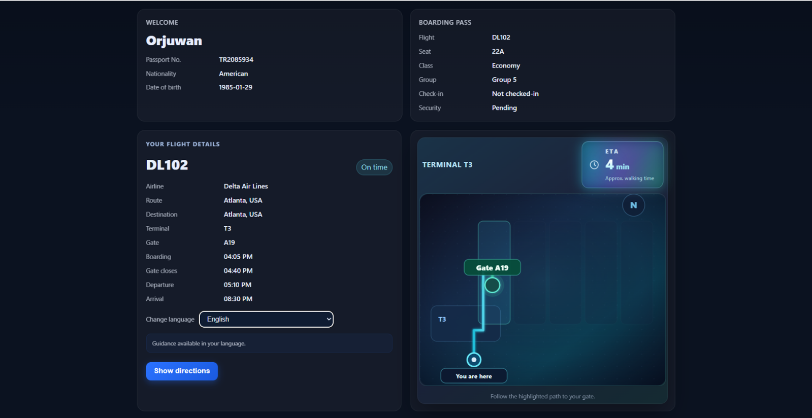
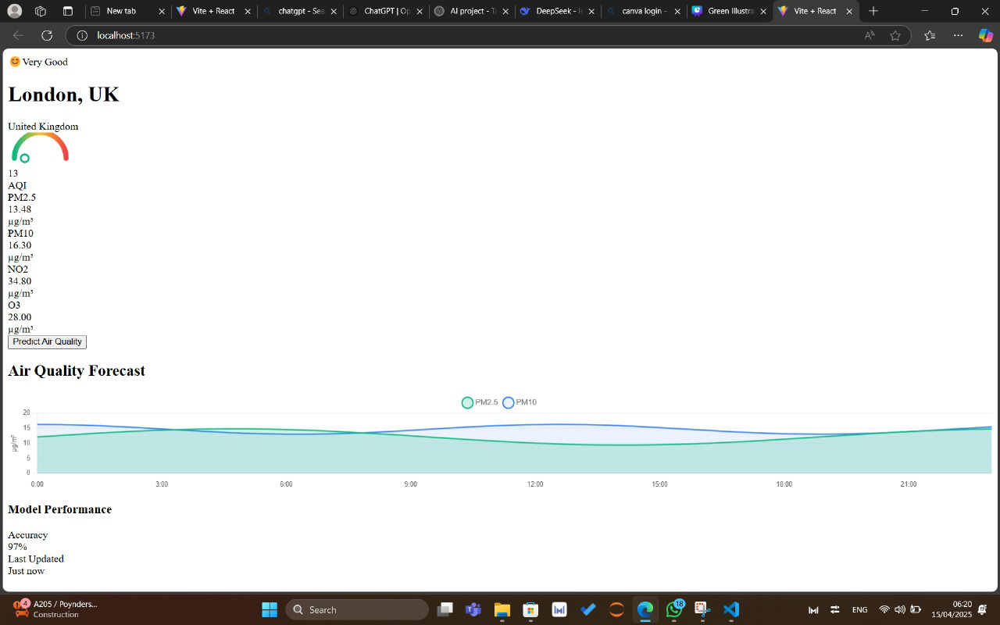
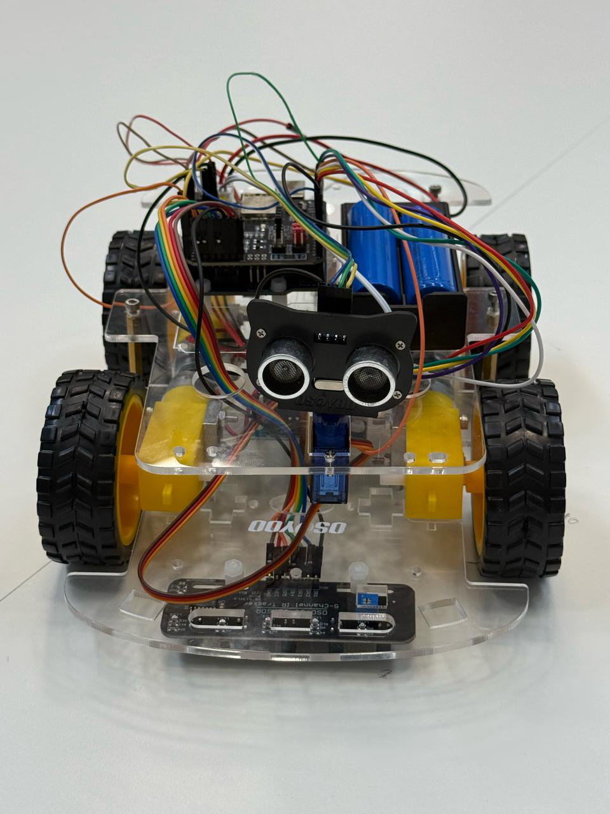
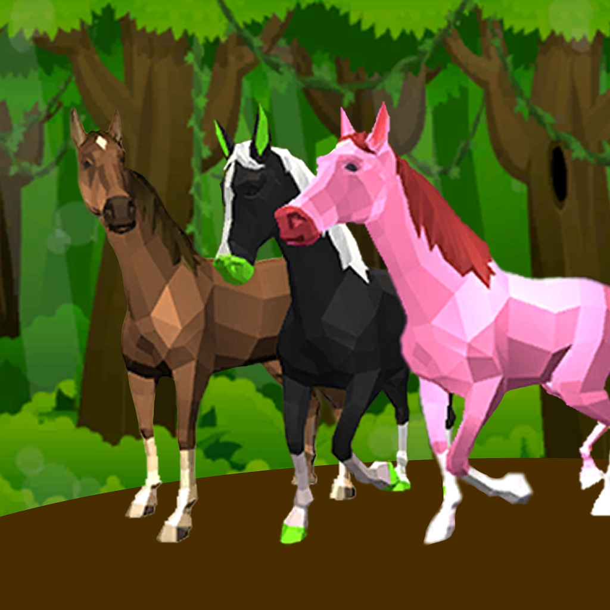
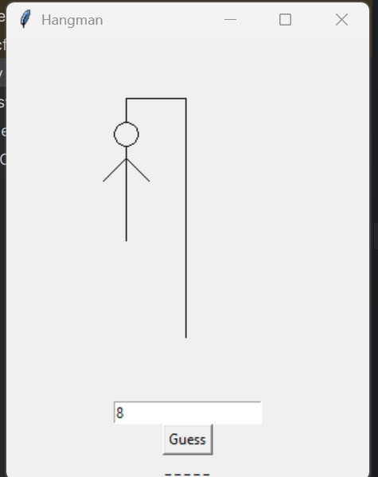

I'm a Computer Science and Artificial Intelligence graduate from Queen Mary University of London. I'm interested in machine learning, AI, and building practical applications.
Reviewed and refined a proposal for an AI-enabled biodiversity monitoring platform. Provided feedback on the machine-learning methodology, evaluation plan, and sensor-fusion workflow.
Built AI automation workflows using Python, OpenAI APIs, n8n, and Langflow. Integrated Airtable and webhooks, and developed API-based tools for energy and commodity market research.
BSc (Hons) Computer Science and Artificial Intelligence
Upper Second-Class Honours (2:1)
1st Class achieved
Developed a strong academic foundation in computing, mathematics, and research skills to prepare for university-level study.

Final-Year Project
Python · FastAPI · React · FAISS · Computer Vision
Built an airport kiosk prototype that recognises registered demo users from a live camera feed and displays simulated passport, boarding pass, and flight information. Integrated existing face-recognition models with a FastAPI backend, React interface, and FAISS-based face matching.
View code
Python | LSTM | Random Forest
Developed an AI system that predicts air quality index (PM2.5) using LSTM neural networks and Random Forest models with real-time data integration.
View code
Python | AI Planning | Robotics
Designed an intelligent control system for autonomous cars, applying AI algorithms for real-time navigation, path planning, and collision avoidance.

Java | Object-Oriented Programming
Built a horse racing simulation game applying object-oriented programming principles, focusing on race logic, player interaction, and randomised outcomes.
View code
Python | Tkinter | Pandas
Developed a Hangman game with user login, score tracking, and graphical interface using Tkinter. Data is managed through CSV files with pandas.
View code